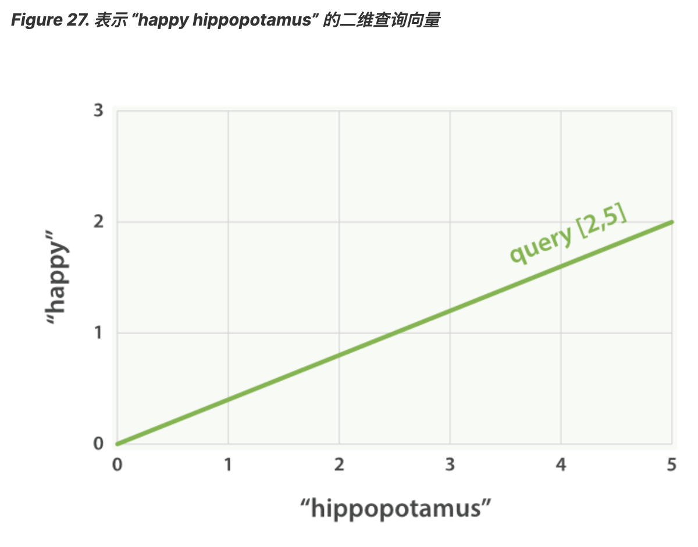

1. 相关度评分背后的理论
Lucene（或 Elasticsearch）使用 布尔模型（Boolean model） 查找匹配文档，并用一个名为 实用评分函数（practical scoring function） 的公式来计算相关度。 这个公式借鉴了 词频/逆向文档频率（term frequency/inverse document frequency） 和 向量空间模型（vector space model）， 同时也加入了一些现代的新特性，如协调因子（coordination factor）， 字段长度归一化（field length normalization），以及词或查询语句权重提升。
注意
不要紧张！这些概念并没有像它们字面看起来那么复杂，尽管本小节提到了算法、公式和数学模型， 但内容还是让人容易理解的，与理解算法本身相比，了解这些因素如何影响结果更为重要。
1.1. 布尔模型
布尔模型（Boolean Model） 只是在查询中使用 AND 、 OR 和 NOT （与、或和非）这样的条件来查找匹配的文档，以下查询：
full AND text AND search AND (elasticsearch OR lucene) 会将所有包括词 full 、 text 和 search ，以及 elasticsearch 或 lucene 的文档作为结果集。
这个过程简单且快速，它将所有可能不匹配的文档排除在外。
1.2. 词频/逆向文档频率
当匹配到一组文档后，需要根据相关度排序这些文档，不是所有的文档都包含所有词，有些词比其他的词更重要。 一个文档的相关度评分部分取决于每个查询词在文档中的 权重 。
词的权重由三个因素决定，在 什么是相关 中已经有所介绍，有兴趣可以了解下面的公式，但并不要求记住。
1.3. 词频
词在文档中出现的频度是多少？频度越高，权重 越高 。 5 次提到同一词的字段比只提到 1 次的更相关。词频的计算方式如下：
tf(t in d) = √frequency
词 t 在文档 d 的词频（ tf ）是该词在文档中出现次数的平方根。
如果不在意词在某个字段中出现的频次，而只在意是否出现过，则可以在字段映射中禁用词频统计：
PUT /my_index
{
"mappings": {
"doc": {
"properties": {
"text": {
"type": "string",
"index_options": "docs"
}
}
}
}
}
将参数 index_options 设置为 docs 可以禁用词频统计及词频位置，这个映射的字段不会计算词的出现次数， 对于短语或近似查询也不可用。要求精确查询的 not_analyzed 字符串字段会默认使用该设置。
1.4. 逆向文档频率
词在集合所有文档里出现的频率是多少？频次越高，权重 越低 。常用词如 and 或 the 对相关度贡献很少，
因为它们在多数文档中都会出现，一些不常见词如 elastic 或 hippopotamus 可以帮助我们快速缩小范围找到感兴趣的文档。
逆向文档频率的计算公式如下：
idf(t) = 1 + log ( numDocs / (docFreq + 1))
词 t 的逆向文档频率（ idf ）是：索引中文档数量除以所有包含该词的文档数，然后求其对数。
1.5. 字段长度归一值
字段的长度是多少？字段越短，字段的权重 越高 。如果词出现在类似标题 title 这样的字段，
要比它出现在内容 body 这样的字段中的相关度更高。字段长度的归一值公式如下：
norm(d) = 1 / √numTerms
字段长度归一值（ norm ）是字段中词数平方根的倒数。
字段长度的归一值对全文搜索非常重要，许多其他字段不需要有归一值。
无论文档是否包括这个字段，索引中每个文档的每个 string 字段都大约占用 1 个 byte 的空间。
对于 not_analyzed 字符串字段的归一值默认是禁用的，
而对于 analyzed 字段也可以通过修改字段映射禁用归一值：
PUT /my_index
{
"mappings": {
"doc": {
"properties": {
"text": {
"type": "string",
"norms": { "enabled": false }
}
}
}
}
}
这个字段不会将字段长度归一值考虑在内，长字段和短字段会以相同长度计算评分。
对于有些应用场景如日志，归一值不是很有用，要关心的只是字段是否包含特殊的错误码或者特定的浏览器唯一标识符。 字段的长度对结果没有影响，禁用归一值可以节省大量内存空间。
1.6. 结合使用
以下三个因素——词频（term frequency）、逆向文档频率（inverse document frequency） 和字段长度归一值（field-length norm）——是在索引时计算并存储的。 最后将它们结合在一起计算单个词在特定文档中的 权重 。
Tip
前面公式中提到的 文档 实际上是指文档里的某个字段，每个字段都有它自己的倒排索引，因此字段的 TF/IDF 值就是文档的 TF/IDF 值。
当用 explain 查看一个简单的 term 查询时（参见 explain ），可以发现与计算相关度评分的因子就是前面章节介绍的这些：
PUT /my_index/doc/1
{ "text" : "quick brown fox" }
GET /my_index/doc/_search?explain
{
"query": {
"term": {
"text": "fox"
}
}
}
以上请求（简化）的 explanation 解释如下：
weight(text:fox in 0) [PerFieldSimilarity]: 0.15342641 result of: fieldWeight in 0 0.15342641 product of: tf(freq=1.0), with freq of 1: 1.0 idf(docFreq=1, maxDocs=1): 0.30685282 fieldNorm(doc=0): 0.5
词 fox 在文档的内部 Lucene doc ID 为 0 ，字段是 text 里的最终评分。
词 fox 在该文档 text 字段中只出现了一次。
fox 在所有文档 text 字段索引的逆向文档频率。
该字段的字段长度归一值。
当然，查询通常不止一个词，所以需要一种合并多词权重的方式——向量空间模型（vector space model）。
2. 向量空间模型
向量空间模型（vector space model） 提供一种比较多词查询的方式，单个评分代表文档与查询的匹配程度， 为了做到这点，这个模型将文档和查询都以 向量（vectors） 的形式表示：
向量实际上就是包含多个数的一维数组，例如：
[1,2,5,22,3,8] 在向量空间模型里，向量空间模型里的每个数字都代表一个词的 权重 ， 与 词频/逆向文档频率（term frequency/inverse document frequency） 计算方式类似。
Tip
尽管 TF/IDF 是向量空间模型计算词权重的默认方式，但不是唯一方式。Elasticsearch 还有其他模型如 Okapi-BM25 。 TF/IDF 是默认的因为它是个经检验过的简单又高效的算法，可以提供高质量的搜索结果。
设想如果查询 “happy hippopotamus” ，常见词 happy 的权重较低，不常见词 hippopotamus 权重较高，假设 happy 的权重是 2 ，
hippopotamus 的权重是 5 ，
可以将这个二维向量—— [2,5] ——在坐标系下作条直线，线的起点是 (0,0) 终点是 (2,5) ，如图 Figure 27,
“表示 “happy hippopotamus” 的二维查询向量” 。

现在，设想我们有三个文档：
{kind=link}
I am happy in summer 。 After Christmas I’m a hippopotamus 。 The happy hippopotamus helped Harry 。 可以为每个文档都创建包括每个查询词—— happy 和 hippopotamus ——权重的向量， 然后将这些向量置入同一个坐标系中，如图 Figure 28, ““happy hippopotamus” 查询及文档向量” ：
文档 1： (happy,__) —— [2,0] 文档 2： ( _ ,hippopotamus) —— [0,5] 文档 3： (happy,hippopotamus) —— [2,5]
{kind=link}
向量之间是可以比较的，只要测量查询向量和文档向量之间的角度就可以得到每个文档的相关度， 文档 1 与查询之间的角度最大，所以相关度低；文档 2 与查询间的角度较小， 所以更相关；文档 3 与查询的角度正好吻合，完全匹配。
Tip
在实际中，只有二维向量（两个词的查询）可以在平面上表示，幸运的是， 线性代数 ——作为数学中处理向量的 一个分支——为我们提供了计算两个多维向量间角度工具，这意味着可以使用如上同样的方式来解释多个词的查询。
关于比较两个向量的更多信息可以参考 余弦近似度（cosine similarity）。
现在已经讲完评分计算的基本理论，我们可以继续了解 Lucene 是如何实现评分计算的。